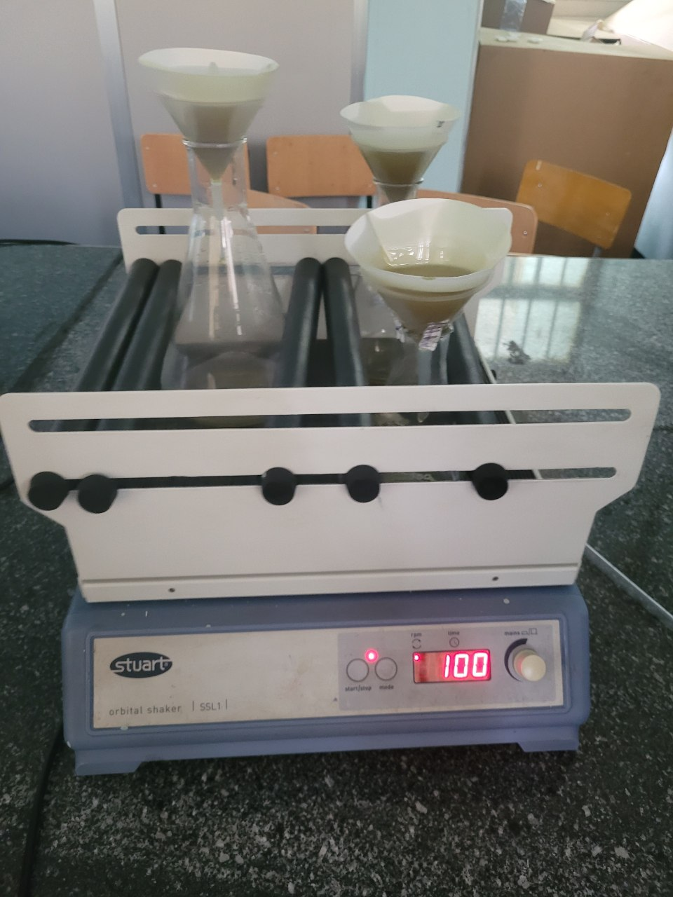

March 15, 2024
The first meeting with our advisor and all members of the ISTP Group 24 was conducted. The primary objectives of the ISTP project were discussed, including the development of practical thinking and laboratory skills, the cultivation of critical thinking and problem-solving abilities, the implementation of idea generation techniques, and the enhancement of collaboration and cooperative working skills. Furthermore, it was emphasized that the project aims to reflect the combined abilities of students from diverse academic backgrounds, such as Biotechnology, Food Science and Nutrition, Geology, and Industrial Chemistry. Additionally, the importance of effective time management was emphasized to ensure the timely completion of the project and to allow for recovery time in the event of any adverse circumstances.
March 20, 2024
During the meeting, each team member presented their proposed ideas orally to the advisor, attempting to convince the advisor to select their respective ideas. After a collaborative discussion with the advisor, the project "Herbal Hair Oil for Effective Antifungal Treatment in Humans from Garlic, Aloe Vera, and Rosemary" was collectively selected.
March 27, 2024
The team members convened and completed Form-B, which contained the selected project title. Subsequently, the group engaged in a discussion regarding the preparation of the project proposal, including the sharing and allocation of tasks among the team members. The content and structure of the project proposal were thoroughly deliberated, with the team members clearly defining the expected content for each section. Finally, the team established a timeline for commencing the project and assigned specific responsibilities for drafting the project proposal.
April 19, 2024
The team members engaged in a comprehensive discussion regarding the detailed methodologies of the project. This included the identification of the required apparatuses and the appropriate timeline for procuring them, as well as the specific techniques and methods to be employed, such as oil extraction, the proportions of the oil components, the types of oils to be used, and the homogenization techniques. Additionally, the team deliberated on the apparatuses to be utilized in the experiment, including the separatory funnel and steam distillatory. The group also addressed the potential recovery methods in the event that the procedures failed to yield the expected results. Furthermore, the team discussed the concept of synergization, which refers to the combined effect of the various components. Finally, the team members discussed the need to have the project funding released from the ISTP coordinators as quickly as possible to facilitate the timely commencement of the project.
April 26, 2024
The team members engaged in detailed discussions regarding the laboratories and apparatuses required for the various activities planned within the project. We selected primarily three laboratories to utilize: the Industrial Chemistry laboratories, the Biotechnology laboratories, and the Food Science laboratories. Additionally, the team discussed the project funding, and due to the lack of a released budget, we were unable to commence any activities or provide a progress report. To address this, we allocated specific tasks, including appointing liaisons to coordinate with the respective laboratory assistants and to procure the necessary raw materials immediately after the budget is released, in order to facilitate the timely initiation of the project.
May 6, 2024
First phase of equipment was bought like rosemary, garlic, olive oil and Aloe Vera.
May 8 – 24, 2024
Extensive lab work and production phase.
May 8, 2024
Officially the starting of laboratory work. Preparation of aloe vera gel(juice)
May 9 and 10, 2024
Unpeeling garlic cloves, Grinding and immersing into carrier oil.

May 13, 2024
- Taking the garlic that was put in dark room after 3 days of incubation
- Squeezing(filtering of the immersed garlic to separate the oil from it using cloth
May 14, 2024
- Boiling the carrier oil with aloe Vera Juice
- Truncating the strands of the rosemary and Boiling the carrier oil with aloe Rosemary
May 17 - May 22
Filtration (extraction) of oils from samples having debris and impurities

May 17 and May 18
Extraction of oil from rosemary

May 18 and 19
Extraction of oil from Garlic
May 18 and 19
- Extraction of oil from Garlic
- Extracction of oil from the alovera oil debris